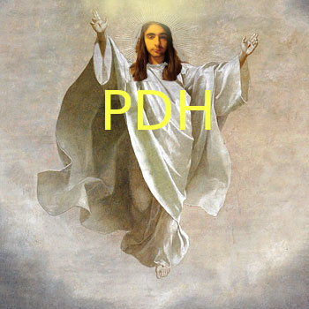

PDH(partido demócrata de los hippies)
Ideales:
Mi ideal es un grupo que no se encamine al abismo por tonterías, un grupo que afronte los problemas directa y no pasivamente, un grupo que mantenga unos cimientos duros que no se deshagan con el tiempo, organizar eventos al mínimo coste, crear todo tipo de leyes y castigos que implementen risas en nuestros ciudadanos, me gustaría llevar el grupo para organizarlo de la mejor manera que pueda(me esforzaré de verdad). Pondré una descripción en el grupo con múltiples actividades, calendarios, juegos, retos y muchas cosas que os gustarán, os lo aseguro.
Leyes:
-El presidente no es impune a la ley-no se puede comprar el voto de nadie
-no puedes mantenerte en contra después de haber hecho una votación
-se puede beber(sin llegar a patear un árbol)
-Los negros no tendrán derechos
-El presupuesto de las actividades se reducirá al mínimo(calidad precio)
-Se prohibirá el tráfico y consumo de drogas.
-Habrá una infraestructura debajo de los puentes lo que los hace habitables.(Puentes modernos para vagabundos modernos)
-Se abrirá una cárcel específicamente para feminazis, donde se practicará torturas sus prisioneros.
-Está prohibido el cambio de orientación sexual, si eres hombre, eres hombre
-No se permite al colectivo LGTBI(no me funen, simplemente es que habrá castigo para aquellos que entre bromas digamos que lo son)
-Se implementarán taca tacas como vehículos de transporte autorizado en la carretera, siempre que no pase de los 45km/h
-Iniciaré actividades divertidas para fomentar la diversión en el grupo
-No se puede vapear ni fumar
-En una quedada para dormir no te puedes levantar después de las 10:30
-Debes enviar algún mensaje una vez al mes en el chat
-Debes participar en las encuestas, actividades grupales y elecciones(se puede abstener)
-Los daños causados a otras personas tanto física como verbalmente serán sancionados.
-Los daños causados a casas, iglesias, pintar grafitis, hacer rituales de sangre, etc, están prohibidos
-Los castigos los estabilizaré mediante un sistema para ganar y perder puntos y se te añadirán o quitarán derechos y podrás o no adquirir cargos.